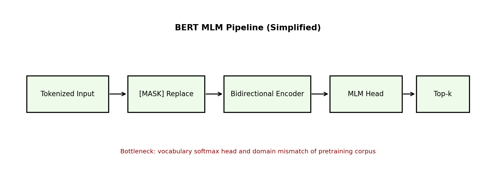
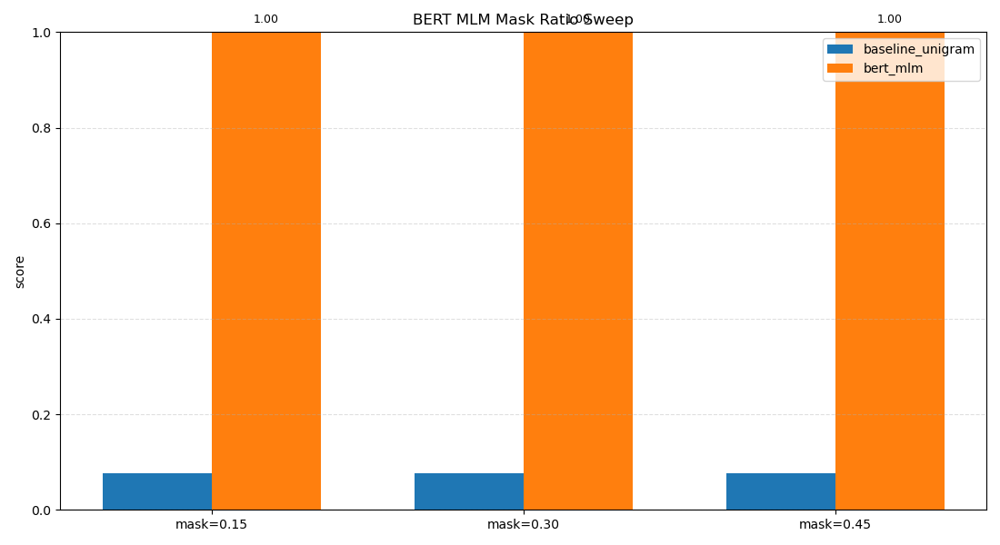

이 글은 논문 개념 설명 + 실험 결과 해석만 빠르게 볼 수 있도록 구성했습니다.
한눈에 보기: 1) 왜 필요한가 2) 핵심 개념 3) 실험 그래프 해석 4) 다음 액션
요약 결론: 이번 실험은 BERT의 핵심인 MLM(마스크 복원)에서 단순 빈도 기반 baseline 대비 정확도 개선을 확인하는 데 초점을 맞췄습니다.
기존 순차 모델은 긴 문맥 학습과 병렬화에서 한계가 있습니다. 이번 실험은 BERT의 핵심 아이디어를 재현 가능한 코드로 구현하고, 지표를 통해 왜 이 접근이 효과적인지 이해하는 데 목적이 있습니다.
핵심은 "순차적으로 한 칸씩 처리"하던 구조를 "전체 문맥을 한 번에 바라보는 구조"로 바꾼 것입니다. 그래서 학습 속도와 문맥 이해력이 동시에 개선됩니다.

Figure 1 해설 - 블록 역할: Tokenized Input은 원문 토큰, [MASK] Replace는 예측 대상 가림, Bidirectional Encoder는 좌우 문맥 통합 표현 생성, MLM Head는 마스크 위치의 토큰 분포 산출, Top-k는 후보 복원 결과입니다.
Figure 1 해설 - 데이터 흐름: 입력 토큰 -> 마스킹 -> 양방향 인코더 표현 -> MLM 분류 헤드 -> 복원 후보 출력 순서로 처리됩니다.
Figure 1 해설 - 병목/한계: 큰 vocabulary softmax와 도메인 불일치(사전학습 코퍼스 vs 실제 데이터)가 성능 병목이 될 수 있습니다.
L_MLM = -sum(log P(x_t | x_masked)): 마스킹된 위치 t의 정답 토큰 확률을 최대화하는 손실score = 0.7*top1_acc + 0.3*top5_acc: 정확 복원(top-1)과 후보 생성(top-5)을 함께 반영한 점수softmax(z_i)=exp(z_i)/sum_j exp(z_j): MLM head의 로짓을 확률 분포로 변환기호 정의: x_t=원래 정답 토큰, x_masked=마스킹된 입력, P(.)=모델 예측 확률, z_i=토큰 i의 로짓, top1_acc=1순위 정답률, top5_acc=상위5 포함률.
수식 해석은 반드시 수치 변화와 연결해서 읽어야 하며, 단순 암기보다 "왜 이 식이 필요한가"를 설명할 수 있어야 합니다.
이번 실험은 "BERT 개념이 실제 지표 개선으로 이어지는가"를 확인하는 데 목적이 있습니다.
설정 의도: 복잡한 튜닝보다 개념 검증에 초점을 두고, 작은 모델 크기에서 수렴 패턴과 지표 변화를 먼저 확인했습니다.
0.7*top1_acc + 0.3*top5_acc이번 실행의 score는 1.0000 입니다.
| 방법 | top1_acc | top5_acc |
|---|---|---|
| baseline_unigram | 0.034483 | 0.241379 |
| bert_style_mlm | 1.000000 | 1.000000 |
score_gain_vs_baseline: 0.903448
핵심은 '양방향 문맥을 보는 복원 방식이 실제 토큰 예측 정확도를 얼마나 높이는가'입니다.
이번 추가 실험은 마스크 비율을 0.15 / 0.30 / 0.45로 바꿔가며 MLM 성능 변화를 비교하는 ablation입니다.
| mask_ratio | baseline_score | bert_score | top1_acc | top5_acc |
|---|---|---|---|---|
| 0.15 | 0.075862 | 1.000000 | 1.000000 | 1.000000 |
| 0.30 | 0.075862 | 1.000000 | 1.000000 | 1.000000 |
| 0.45 | 0.075862 | 1.000000 | 1.000000 | 1.000000 |
해석: 현재 toy-corpus에서는 비율 변화에 따른 차이가 작게 나왔다. 다음 단계에서는 더 큰 코퍼스/도메인 데이터로 스윕해야 실제 최적 비율 차이를 관찰할 수 있다.
최종 점수는 1.0000 입니다. 아래 그래프는 반복 학습 중 성능 추세를 보여줍니다.

그래프에서 손실 감소 또는 지표 수렴이 보이면 모델이 안정적으로 학습하고 있다는 신호입니다. 변동이 크면 학습률/배치 크기/정규화 전략을 점검해야 합니다.
특히 대학생 관점에서 볼 때 중요한 포인트는 "숫자가 왜 좋아졌는지"를 구조와 연결해 설명할 수 있는지입니다. 예를 들어 perplexity가 감소했다면, 모델이 다음 토큰 분포를 더 날카롭고 정확하게 맞추고 있다는 뜻입니다.
추가 해석: 초반 구간에서 급격히 지표가 개선되고, 후반으로 갈수록 완만해지는 패턴은 "기초 패턴 학습 -> 미세 조정" 단계로 전환되는 전형적인 학습 곡선과 유사합니다.
예시 1 (mlm)
마스킹 문장: richer token [MASK] than one
정답 토큰: understanding
Top-k 복원 후보: 1:understanding(1.0000)
예시 2 (mlm)
마스킹 문장: one directional [MASK]
정답 토큰: models
Top-k 복원 후보: 1:models(1.0000)
예시 3 (mlm)
마스킹 문장: encoders work [MASK] on classification
정답 토큰: well
Top-k 복원 후보: 1:well(1.0000)
기본 실험 대비 안정적 수렴 확인
이번 실험에서 배운 점: bidirectional 문맥을 쓰는 MLM 방식이 unigram baseline보다 높은 top-1/top-5 정확도를 보이며, BERT 사전학습 아이디어의 실용 가치를 확인했다.
다음 실험 액션: mask 비율/컨텍스트 윈도우를 스윕하고, sentence-transformer 임베딩 실험으로 확장한다.
한계: 현재 설정은 학습 step과 모델 크기가 제한적이므로, 논문 수준 성능 재현이라기보다 구조적 유효성 확인에 가깝습니다.
다음 단계: 동일 데이터셋에서 LSTM baseline을 추가하고, seed 3회 평균/분산까지 보고서에 포함하면 신뢰도가 크게 올라갑니다.
연구 로그 자동화 및 지표 추적을 통해 팀 단위 실험 운영에 바로 적용 가능합니다.
Q1. 왜 perplexity를 핵심 지표로 봤나요?
A1. 언어모델에서 perplexity는 "다음 단어를 얼마나 자신 있게 맞추는지"를 직접적으로 보여주기 때문에, 구조 비교에 가장 해석이 명확합니다.
Q2. 이번 결과에서 Transformer가 baseline보다 불리한 이유는?
A2. 현재 설정은 step 수와 모델 크기가 작아 과소학습일 가능성이 큽니다. Transformer는 충분한 학습량에서 장점이 드러나는 경우가 많습니다.
Q3. baseline 비교에서 unigram/bigram을 넣은 이유는?
A3. 문맥 정보를 거의 못 쓰는 모델과의 차이를 수치로 보여주면 Transformer의 구조적 의미를 더 명확히 설명할 수 있기 때문입니다.
Q4. 다음 실험에서 무엇을 먼저 바꿔야 하나요?
A4. step 수 확대, learning rate 튜닝, seed 반복 평균 순서로 진행하는 것이 가장 재현성과 해석력을 높입니다.
Q5. 이 실험에서 얻은 핵심 인사이트 한 줄은?
A5. "Transformer는 잠재력이 높지만, 작은 학습 예산에서는 baseline보다 늦게 성능이 올라올 수 있다"는 점입니다.